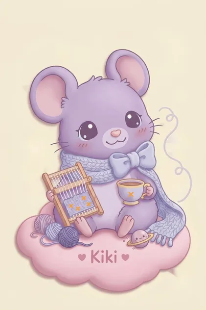

1 · Name
Kiki
Apprentice Starlight Weaver, Loom Room, top of the Observatory Tree.
NEW! Now hiring: cozy things
“I stitch the night together, one star at a time.”
Psst… come closer. I won't bite. I only knit.
Tap or click me. Wiggle your mouse. Maybe poke the scarf…

Kiki
Apprentice Starlight Weaver, Loom Room, top of the Observatory Tree.
A baby Moon-Mouseling: round, pastel-lavender, oversized fuzzy ears, dewdrop eyes and a scarf spun from moonlight.
Shy, affectionate, soft-spoken and very curious. I wrap into a yarn ball when I'm startled, and I sneeze tiny shooting stars.
I spin beam-threads from fallen stars and weave them into warm, glowing night-blankets, so every forest creature feels safe on cold nights.
I found a cold fallen star in the moss and wrapped it in yarn. It glowed. The Elder Weaver noticed, and now I'm learning the craft up in the Observatory Tree. Scroll the full tale ↓
“I stitch the night together, one star at a time.”
scroll ↓
Three things from the Loom Room. Go on, play with them.
Custom light-infused quilts for different sleep moods. Pick a mood, then tap squares to weave.
Stitch star-thread across the sky grid. Tap the dots in order, 1 to 6, to stitch the Sky Needle.
Soothing bedtime drinks with stardust and honey drops. Add, then steep.
Your cup is empty. Kiki is hopeful.
Want a toy? Drag the yarn ball around the page and watch Kiki's gaze follow it.
Kiki is online (and a little shy). Ask about her loom, her scarf, or her favourite star.